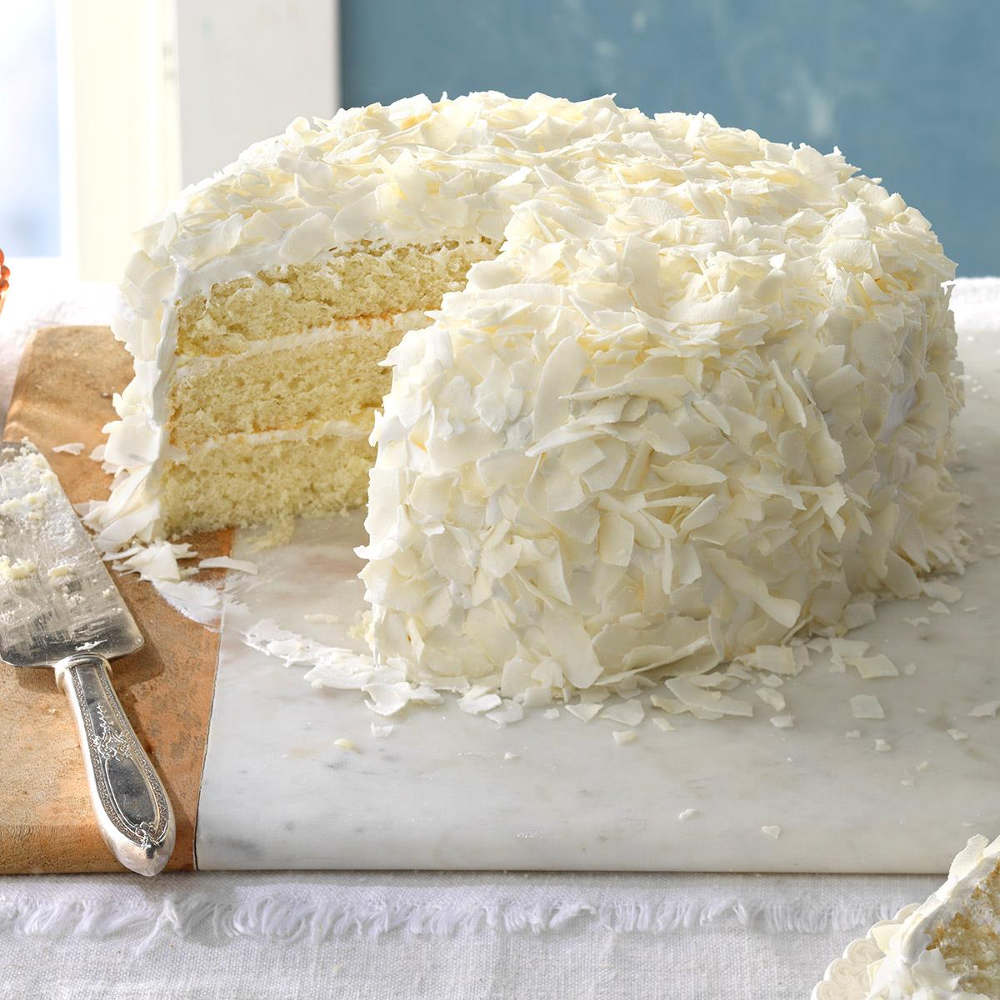

Coconut Cake
A beautiful, fluffy, cloud-like cake that you've only seen in your dreams.
Covered with a veil of coconut flakes paired with deliciously whipped buttercream frosting,
this cake will make you fall in love all while keeping you day dreaming for more.
This soft, tender, white crumb cake filled with coconut milk is a fit for
special occasions but best for secret tea parties or even a picnic date with your crush.
Ingredients
Cake
- Cake Flour
- Baking Powder
- Salt
- Unsalted Butter
- Granulated Sugar
- Egg Whites
- Buttermilk
- Coconut Milk
- Vanilla Bean Paste
- Coconut Extract
Buttercream
- Coconut Cream
- Powdered Sugar
- Meringue Powder
- Unsalted Butter
- Coconut Extract
- Natural Unsweetened Coconut Flakes
- Vanilla Bean Paste
Steps
- Preheat the oven to 350 F, and line the bottoms of three 8-inch cake pans
with circles of parchment paper, then spray the paper lightly with non-stick spray.
- Cream the butter and sugar in a stand mixer for a full 10 minutes.
- Beat in the egg whites one at a time. Wait 10 seconds to procceed before adding next egg white.
- Mix in the dry and liquid ingredients.
- Sift together the flour, baking powder and salt before whisking together the buttermilk, coconut milk, vanilla bean/extract and coconut extract.
- Divide the batter between the two pans. Bake on the center oven rack for about 25-30 minutes.
- Once done baking, cool the cake before icing.
- Chill 1 can of full-fat unsweetened coconut milk.
- Mix powdered sugar, meringue powder, and salt and mix until combined.
- Add the vanilla and coconut extracts, increase the speed to medium high and whip for 4-5 minutes.
- Remove the cooled cakes from the pans.
- Frost and stack all three layers of cake, then frost the cake with buttercream.
- Chill the cake in the refrigerator for 30 minutes.
- Finish cake with coconut flakes.
- Delicious and ready to serve!